FAMILYCONNECT / LOCAL DEVELOPMENT / 21 OCTOBER 2026
Home is where the stories are.
Phase 7: Family Home, portrait timelines, personal profiles, private messages and invitation-only groups.
Ready for local visual and security review. The implemented scope has actual database, storage, Realtime and browser evidence. This is not a public-launch or real-family approval. No hosted database was accessed or modified, neither hosted Auth account was changed, and no real invitation was sent.
Open the local demonstration · Review 14 screenshots · Launch readiness · Original feature audit
What is working
| Area | Implemented behavior |
|---|
| Family Home | Normal returning-user landing page, recent family posts, composer, useful tree/builder/branch links and unread-message/invitation counts. A new invitation still requires identity confirmation and shows the supported family connection first. |
| Timeline | Text, announcements and milestone updates; up to five photographs; author-only text edits and post deletion; likes; comments and own-comment deletion. The selected authorized network is the audience. Separate networks do not inherit social access from connected-profile consent. |
| Profiles | Verified adult directory, profile photograph, display name, biography, general location, month/day birthday, per-field sharing controls, personal shared-post timeline and tree connection. Optional fields and photographs default private. Minors and unverified profiles are excluded from discovery and messaging. |
| Private messaging | Adult recipients in a common authorized network, explicit acceptance, message history, text/emoji, read markers, in-app notifications, own-message tombstones, blocking and recorded reports. One per-user notification subscription while social screens are mounted; database checks remain authoritative. |
| Groups | Name, creator/admins, explicit invitations and acceptance/decline, member list, administrator delegation, remove/leave controls and administrators-only invitation setting. Family administrators cannot read a private group without accepted membership. |
| Mobile | Responsive feed and profiles; selecting a conversation focuses the message panel with a return-to-list control, visible connection status and manual refresh. Latest messages scroll into view. Chrome emulation was tested, not physical devices. |
Legacy composer, photo-removal, feed, reaction/comment and profile-editing behaviors informed the implementation. Unsafe legacy HTML insertion, public photo URLs, old Supabase project configuration and incomplete legacy schema were not restored. The existing graph, relationship calculation, SVG rendering, builder and premium templates remain in place.
Database and media design
Versioned local migrations 20261021000800 through 20261021001300 extend the existing normalized schema. New tables: social_profiles, posts, post_media, comments, reactions, conversations, conversation_members, messages, blocks, reports, notifications and social_limits. Every table has RLS enabled. Browser roles have no raw social writes or unrestricted sensitive-table reads; guarded RPCs filter fields and verify every action. Only authorized notification rows are directly selectable for Realtime.
Social UI uses the existing React/Supabase client. The loopback-only image worker verifies the Auth bearer token and destination permission before decoding. It accepts JPEG/PNG/WebP, rejects video/SVG/animated input, caps input at 8 MiB and 25 megapixels, strips metadata, preserves aspect ratio, creates WebP images within 1600 pixels and thumbnails within 400 pixels, and limits combined processed bytes to 1.5 MB. Two simultaneous processing jobs are allowed. The service key remains server-side.
The family-private bucket is private, with no authenticated direct-upload grant. Exact object paths are checked against authorized post/profile metadata. The UI downloads through authenticated Storage requests and uses temporary in-memory blob URLs, not public URLs. Deletion removes new-read authorization immediately; unreferenced objects are cleaned after 24 hours by the running worker. Draft posts expire after 30 days, old notifications after 30 days, and rate-limit records after one day. Previously viewed/downloaded content cannot be recalled.
Test evidence
| Suite | Result | Artifact |
|---|
| Social database authorization | 14 passed | Evidence |
| Privacy, pagination, revocation and rate limits | 11 passed | Evidence |
| Private media and actual Realtime | 7 passed | Evidence |
| Phase 7 desktop/mobile browser scenarios | 22 passed | Evidence |
| Existing onboarding security | 29 passed | Evidence |
| Existing connected-family consent | 12 passed | Evidence |
| Existing graph adapter | 3 passed | Evidence |
| Existing Phase 6B database safeguards | 17 passed | Evidence |
| Existing desktop/mobile onboarding journeys | 27 passed | Evidence |
| Passwordless email journeys and replay protection | 5 passed | Evidence |
| Family engine, geometry and premium layout | 53 passed | Evidence |
| Existing tree browser scenarios, including targeted retry | 11 passed | Evidence |
| Premium template browser scenarios | 5 passed | Evidence |
These are scenario counts, not a claim of exhaustive coverage. New tests exercise real local Supabase/Auth/Storage/Realtime with fictional accounts, not mocked authorization. The build also passes. The first full tree run encountered a cold-start assertion timeout; its 100-person scenario passed on rerun. A later 300-person mobile screenshot write failed in the OneDrive workspace; the targeted retry passed. Both incidents remain recorded rather than being hidden as clean first-run results.
Security findings and corrections
- Corrected exact-path media authorization. SQL parameter shadowing initially made a helper check for any visible asset. Migration 012 uses the explicit function argument. The regression now gives both networks valid photographs and rejects cross-network originals, thumbnails and signed-URL creation in both directions.
- Corrected notification authorization and readiness. A narrowly scoped security-definer predicate evaluates membership without granting raw membership-table access. Tests wait for PostgreSQL subscription readiness and verify that an outsider receives no notification. Message deletion also refreshes recipients.
- Revocation checks. Removed/left members and revoked network members cannot read or send. Upload finalization rechecks current author permission. Network admins have no private-message bypass. Unaccepted recipients cannot read histories.
- Abuse limits. Database limits per account/action/minute: 60 sends, 30 media reservations, 40 other social mutations. Groups cap active/invited members at 50. Profile/input lengths are constrained and text is rendered by React without raw HTML.
- Dependency audit. Patched the new image processor to Sharp 0.35.5, Vite to 6.4.5 and compatible dependencies; the worker runs on installed Node 24. The final npm audit reports zero high/critical and two moderate legacy React Router entries. Phase 6/7 does not import that router; the generic legacy SPA still needs review before a hosted candidate.
Performance and operating cost
Twenty local feed RPC samples: median 47.8 ms, p95 168.0 ms, maximum 639.1 ms. This is a loopback measurement under development workloads, not a sustained-user or hosted benchmark. Raw measurements and limits.
Feeds use 15-post cursor pages and histories use 30-message cursor pages, including a unique-ID tie-breaker for equal timestamps. Recent comments are capped at 20 per post; conversation lists at 100. Multi-photo grids/profile avatars use thumbnails. There are no ordinary AI calls, video/audio processing, continuous feed polling or attachment hosting. Realtime follows Supabase’s authorization model, using one user-filtered notification subscription rather than a subscription per conversation.
| Planning example, not measured demand | 20 adult beta users | 100 users |
|---|
| 10 new photos/user/month × 350 KB including thumbnail | 70 MB added/month | 350 MB added/month |
| 20 image views/day/user × 30 days × 150 KB average transfer | 1.8 GB/month | 9 GB/month |
| 12-month retained media at that rate | 0.84 GB | 4.2 GB |
Actual test portraits averaged about 35.7 KB including thumbnails; real photographs can be much larger, so the planning assumptions above are deliberately higher. The enforced maximum is 1.5 MB per processed photograph. Private authenticated downloads should be budgeted as uncached egress. Refreshing pages and reading messages add API traffic beyond the image-only estimate.
At the pricing checked on 21 October 2026, Supabase Free lists 1 GB storage and 5 GB uncached egress; Pro starts at $25/month with 100 GB storage and 250 GB uncached egress. Storage overage is $0.0213/GB-month and uncached egress $0.09/GB. Supabase pricing. A production budget must additionally cover the chosen web/image-worker host, email delivery, monitoring, backups and operator time; none was purchased or deployed. Set spending alerts before real-user access. Local operation creates no new hosted bill.
Known limitations and remaining beta blockers
- Local fictional demonstration only. Hosted legacy policy defects, account-preserving migration, deployment configuration and explicit real-user approval remain blocked in LAUNCH-READINESS.md.
- Reports are stored securely but there is no staffed moderation workflow, review dashboard or response SLA. Support, escalation, privacy/terms, correction/deletion procedures, guardian rules and incident ownership must be established before a social beta.
- Messaging is adult-only and requires a common authorized network. A block prevents sending in any shared conversation, including groups; it does not erase already-delivered history. New accepted group members can read existing group history. The last administrator must delegate or remove other accepted members before leaving.
- The 20-comment and 100-conversation display caps are explicit current limits; older comments remain stored but lack a browse-older UI. Post edits change text, not the published photo set. Profile photo replacement uses delete then upload. Composer drafts are retained within the mounted social view, not a cross-device autosave feature.
- Birthday sharing is month/day only; there are no automatic birthday announcements. No family relationship or activity is fabricated. No direct/group conversation search, typing indicators, push/email notifications, end-to-end encryption or message attachments are included.
- Real iPhone/Android, production email/recovery, sustained concurrency and human usability sessions remain untested. The existing private-invitation decline gap is unchanged; social conversation invitations do support decline.
- Uploaded profile photos are used in the new social profiles. Existing tree/print portrait sources and fixture templates are preserved; this phase does not add a private-storage-to-print export adapter or change verified identity names.
- The local backup checkpoint exists, but full restore and storage-byte recovery have not been rehearsed. The image worker requires Node 22+; Node 24 was tested. Two moderate legacy-router advisories remain outside the Phase 6/7 entry point.
Run and review locally
The demonstration is currently served at 127.0.0.1:5176/phase6.html. Fictional account details are in the ignored local file output/phase7/private/demo.json; use its Emma email/password. Click “Explore My Family Connection” to open sign-in. Returning users then reach Family Home. Use a separate browser context with David’s fictional account to inspect live conversations and pending invitations.
supabase start --workdir local/phase6
powershell -File scripts/phase7-start.ps1
# After selecting Node 22 or 24 in your terminal:
npm run test:phase7
npm run test:phase7:boundaries
npm run test:phase7:media
npm run test:phase7:browser
npm run build:phase6
On this computer, the tested Node executable is C:\Program Files\nodejs\node.exe. The launcher selects it if the default Node is too old. It preserves already-running services. Ports: application 5176; image worker 5177; local Supabase API 55321; Studio 55323; Mailpit 55324. All application services bind to loopback. No production credentials are needed.
Rollback and review boundary
The private pre-Phase-7 checkpoint at output/phase7/private/checkpoint contains source/configuration copies, a custom-format fictional database dump and a SHA-256 manifest. The checkpoint predates social storage uploads. To investigate rollback, use a separate disposable local stack and restore the checkpoint there, then run Phase 6B tests before switching any local endpoint. Do not drop current data or apply a hosted rollback from this report. Production migration, backup/storage recovery and rollback require a separate reviewed plan.
Stop here for Phase 7 visual and security review. No hosted deployment, real-family invitations or next-phase work is authorized by these results.
Actual rendered evidence
Seven views on desktop (1440 px) and mobile (390 px), captured with Playwright/Chrome. Images were inspected; corrected defects included duplicate headings, mobile label wrapping, compressed message bubbles and stale unread badges. Photographs reuse the existing licensed fixture assets (source records); identities and interactions are fictional.
Family Home
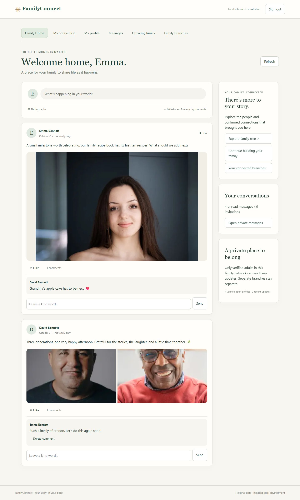
Desktop · actual Chrome rendering · click to inspect full image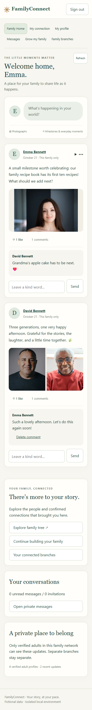
Mobile · actual Chrome rendering · click to inspect full imagePost creation
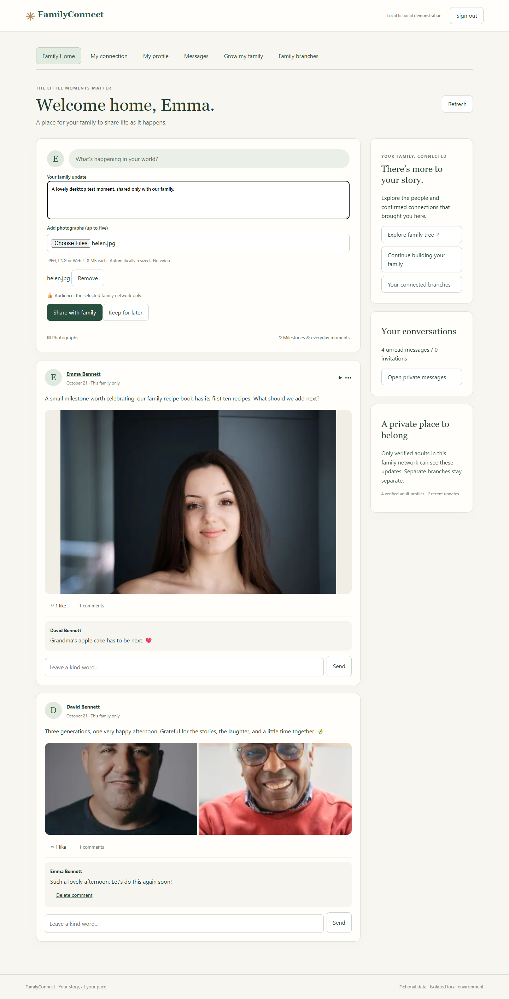
Desktop · actual Chrome rendering · click to inspect full image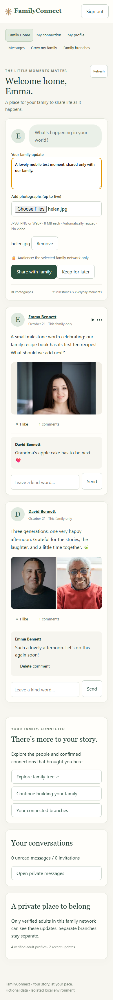
Mobile · actual Chrome rendering · click to inspect full imagePhotographs, likes and comments
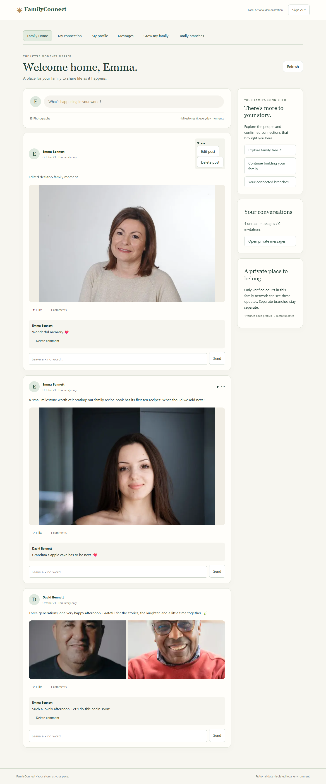
Desktop · actual Chrome rendering · click to inspect full image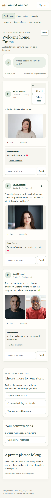
Mobile · actual Chrome rendering · click to inspect full imagePersonal profile and timeline
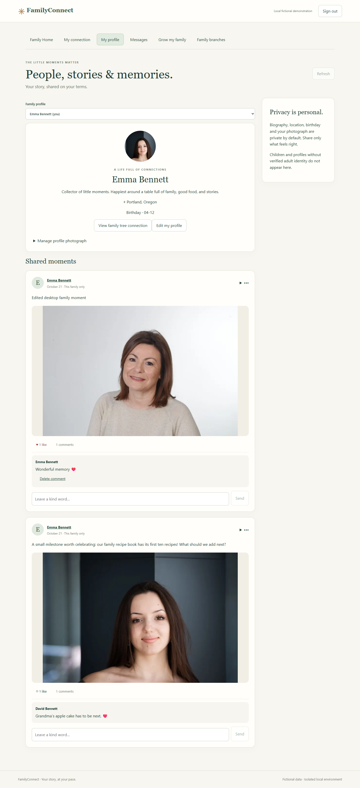
Desktop · actual Chrome rendering · click to inspect full image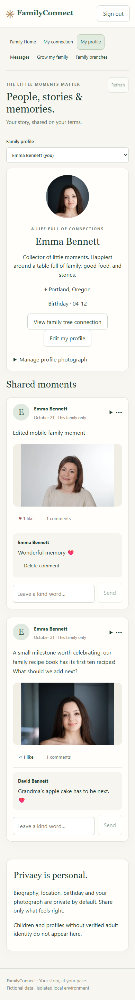
Mobile · actual Chrome rendering · click to inspect full imagePrivate conversation
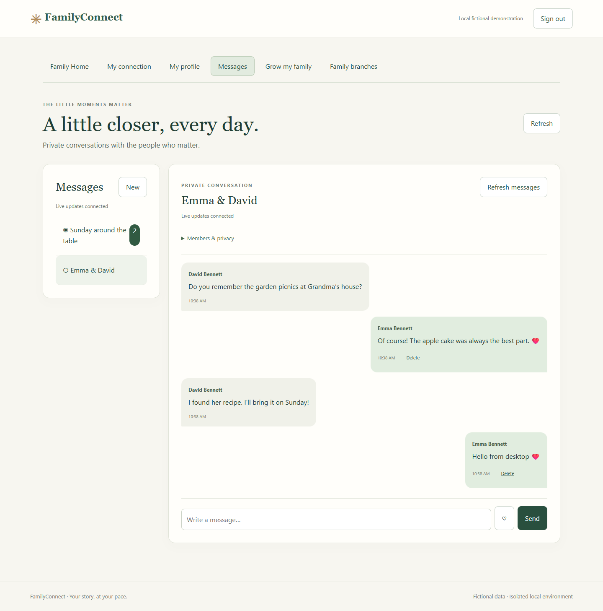
Desktop · actual Chrome rendering · click to inspect full image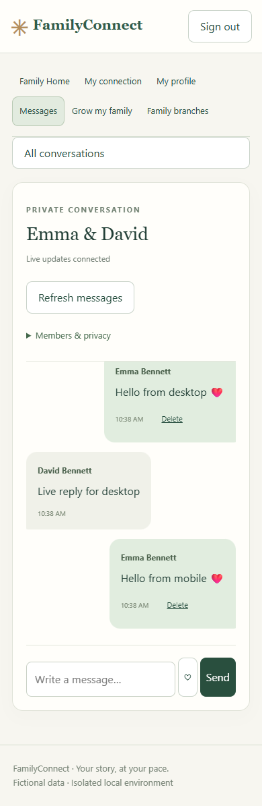
Mobile · actual Chrome rendering · click to inspect full imagePrivate group conversation
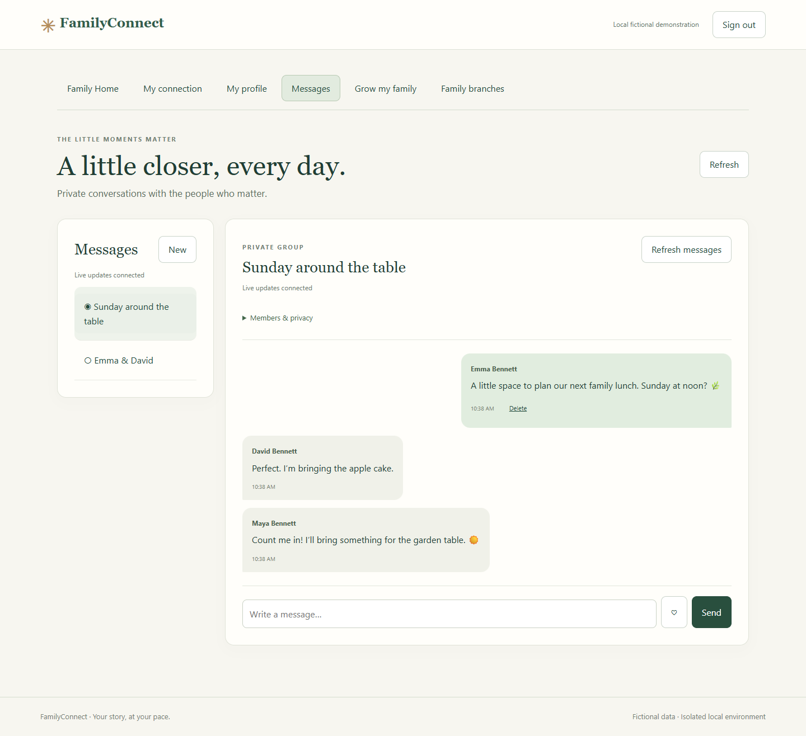
Desktop · actual Chrome rendering · click to inspect full image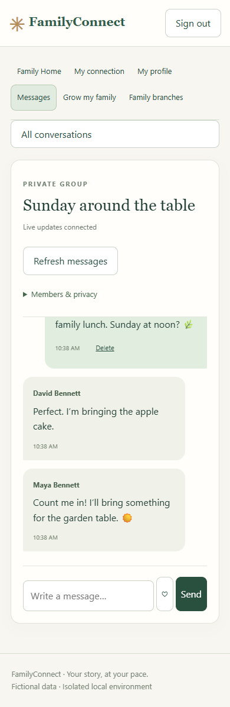
Mobile · actual Chrome rendering · click to inspect full imageMembership and privacy controls
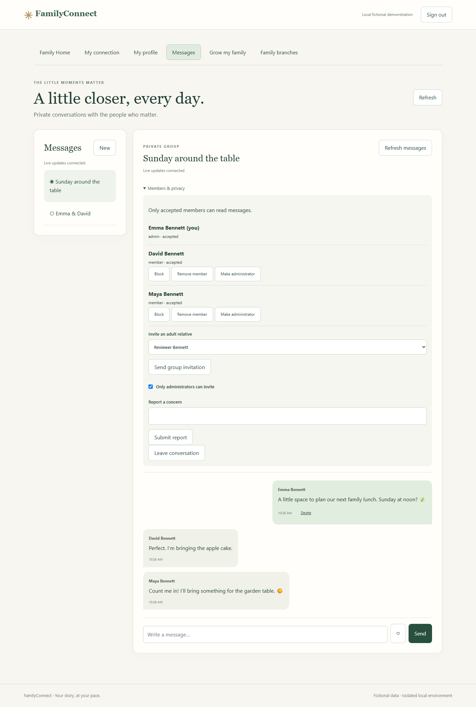
Desktop · actual Chrome rendering · click to inspect full image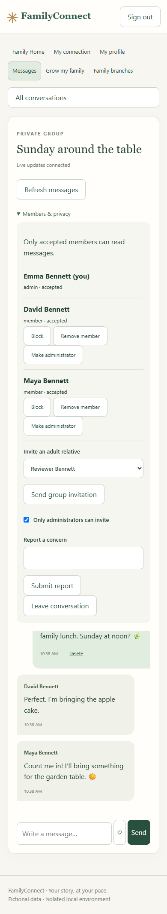
Mobile · actual Chrome rendering · click to inspect full image